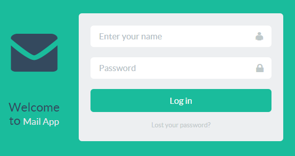
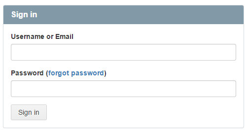
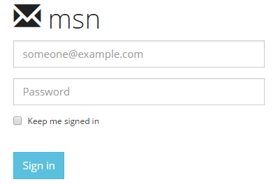
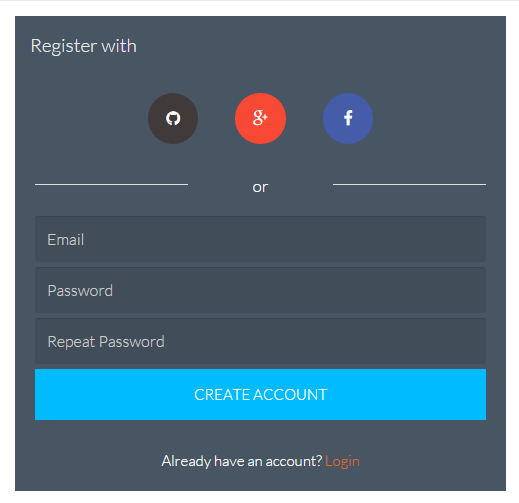

Bootstrap Login
Different type of design bootstrap login page
View on GitHub
Download .zip
Download .tar.gz
Bootstrap Login
Collection of bootstrap login page
Bootstrap Flat UI Login Page

Bootstrap GitHub Login Page

Bootstrap MSN Login

Bootstrap Admin Login
Bootstrap Login With Registration
